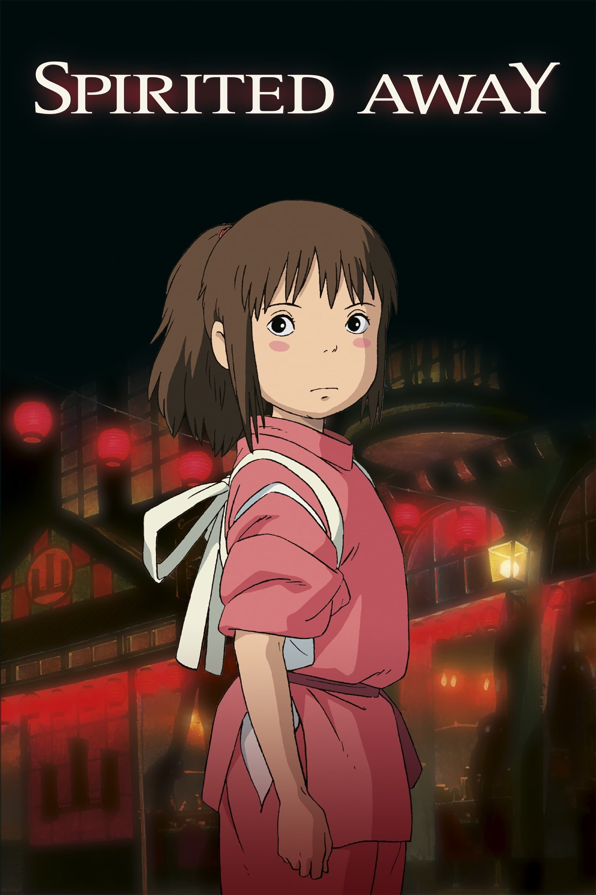
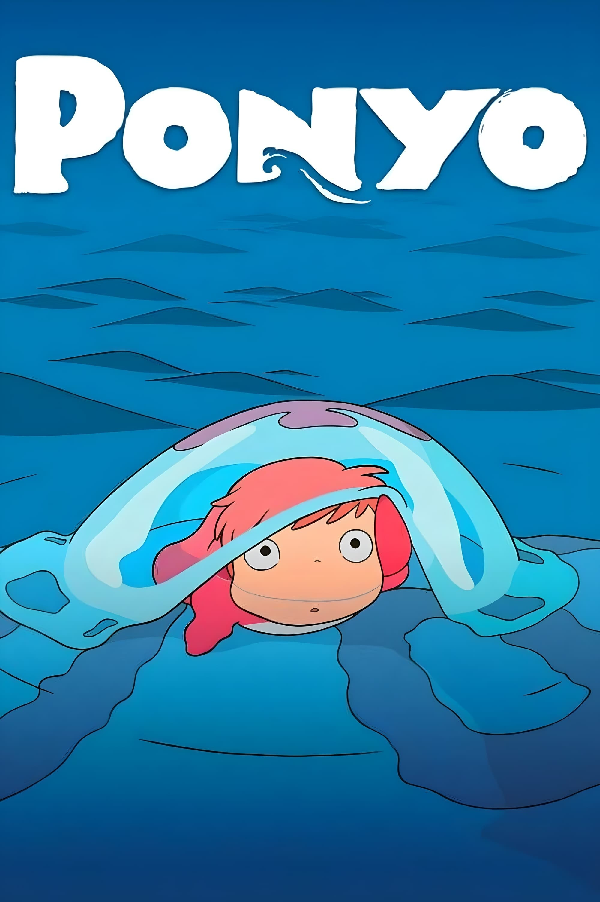
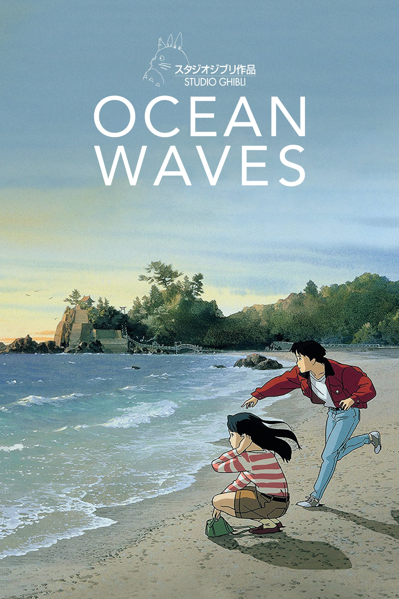
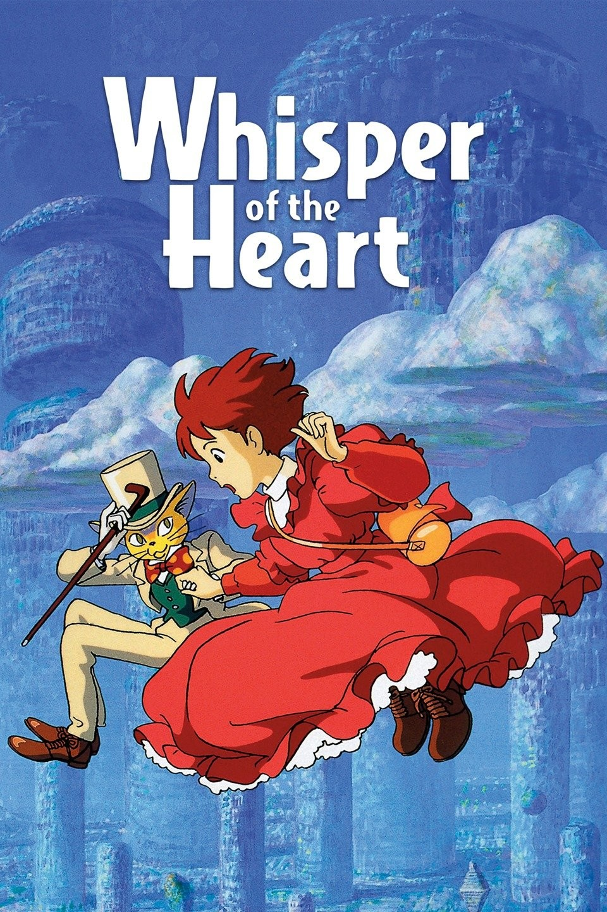
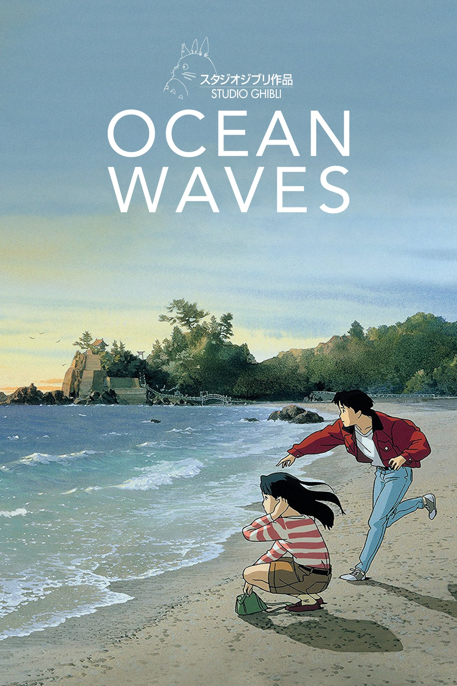
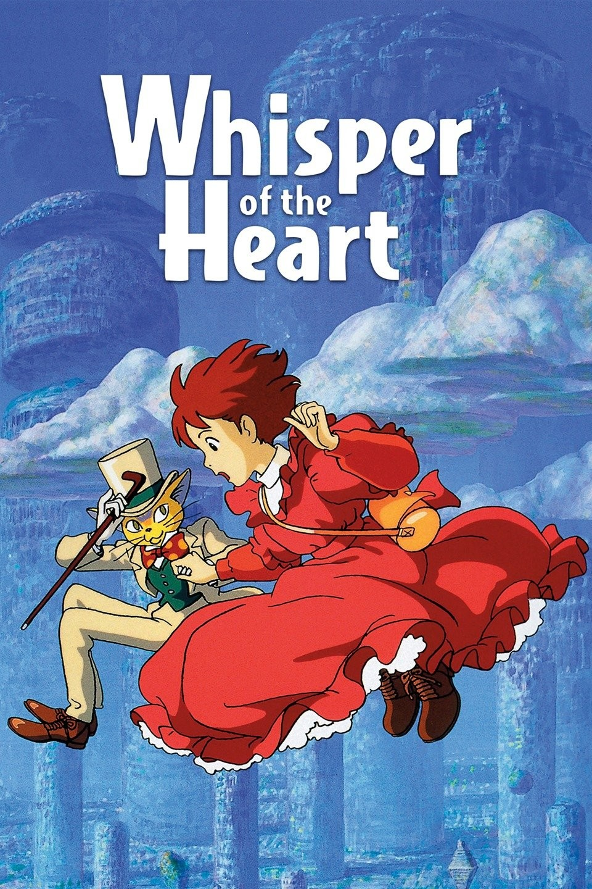
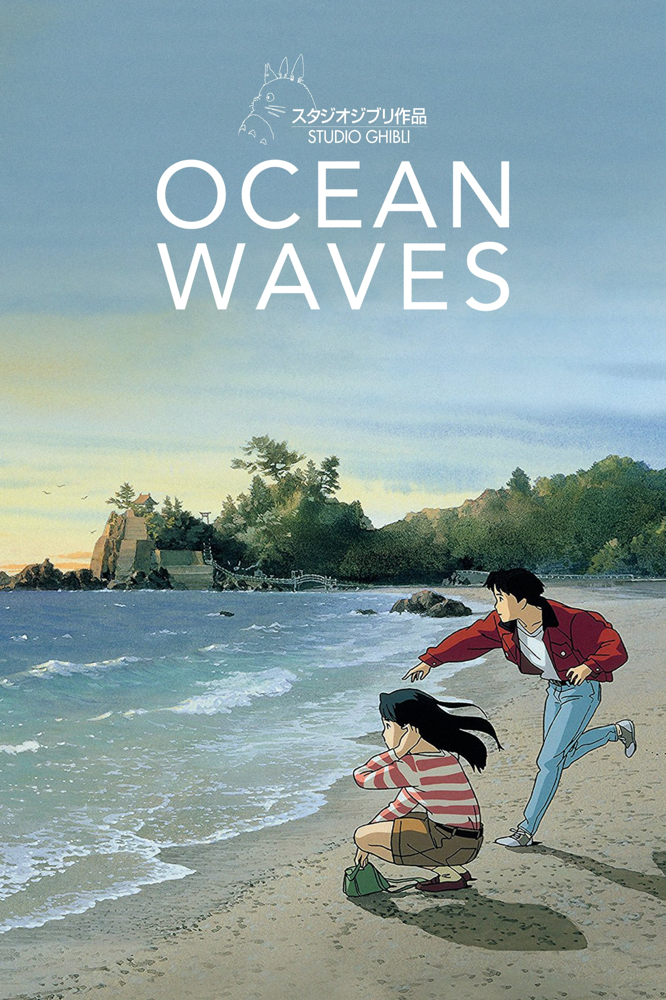
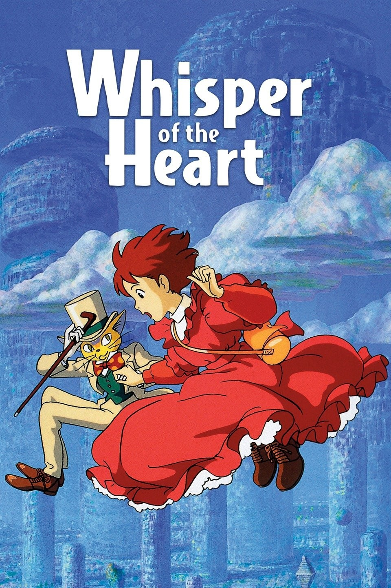

Studio Ghibli, Inc. is a Japanese animation studio based in Koganei, Tokyo. It has a strong presence in the animation industry
and has expanded its portfolio to include various media formats, such as short subjects, television commercials, and two television films.
Their work has been well-received by audiences and recognized with numerous awards.
Among the studio's highest-grossing
films are Spirited Away (2001), Howl's Moving Castle (2004), and Ponyo (2008). Studio Ghibli was founded on June 15, 1985, by the directors
Hayao Miyazaki and Isao Takahata and producer Toshio Suzuki, after acquiring Topcraft's assets. The studio has also collaborated with video
game studios on the visual development of several games.
Our Collection
Studio Ghibli is renowned for its exceptional collection of animated films that have captivated audiences worldwide. Founded by visionary directors Hayao Miyazaki and Isao Takahata, the studio has crafted an enchanting array of movies that blend stunning animation, compelling storytelling, and profound themes. From the timeless classic "My Neighbor Totoro" to the mesmerizing "Spirited Away," each film in the Studio Ghibli collection showcases meticulous attention to detail, and deeply resonant characters.

.png)





 





